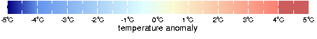

| Index Of Tools | |
|---|---|
| Tool | Example |
| animation | 6 |
| bar plot | 3 |
| color shading | 1, 3, 4, 5 |
| contour | 2, 5 |
| cross section | 5 |
| custom colorscale | 7 |
| data viewer | 1, 2, 3, 5, 6 |
| land mask | 8 |
| land overlays | 1, 2, 4 |
| line plot | 3 |
| matching grids | 8 |
| multiple variables | 4, 5 |
| scatter plot | 3 |
| vector | 4 |
The data selection and manipulation capabilities of the Data Library are extremely valuable on their own, but its data visualization techniques make the Data Library the truly complete tool that it is.
While a discussion of all of these capabilities is not practical for this tutorial, a summary of the most commonly used tools is offered here. As in the previous sections, you will learn how to use these tools with the interface utilities as well as with Ingrid commands in expert mode. It is suggested that you become acquainted with all of the functions described in this section by working through it example by example. However, if you are looking for an example of a particular tool, then please refer to the following tabular index.
Start at the Reyn_Smith*
dataset main page.
Select the monthly SSTA data variable.
Select the June 1998 time period. CHECK
Method 1: Views Links
There are three colored views icons in the function bar and two of them represent the
maps that we want to create.
Select the icon that shows the continents outlined. CHECK
Go back to the June 1998 SSTA page with either the back button or the source bar.
Select the icon that shows the land in black. CHECK
Go back to the June 1998 SSTA page with either the back button or the source bar.
CHECK
Note the other views icons in the function bar. You can obtain maps similar to these images
(e.g., contoured maps) by selecting them as well.
Method 2: Data Viewer
These same options are available in pull-down menus in the Data Viewer.
Select the "Views" link in the function bar.
Locate the pull-down menu with the default "draw land".
Browse this menu and it's options to create maps with a variety of continent and country information.
These same overlay options, along with many other plotting options, can be found via the "plot"
button in the table at the bottom of the page.
Select the "plot" button.
Note the contents of the text box. As you make selections in the pull-down
menus you will see these commands change to indicate your selection. You will also see these commands
in Method 3 when we discuss how to use these tools in expert mode.
Experiment with the overlay options to create similar images as you did above. Your selections
will be drawn when you select the "plot" button.
Experiment with the color scale pull-down menu. Your selections will be drawn when you select
"plot" button.
Go back to the June 1998 SSTA page with either the back button or the source bar.
CHECK
Method 3: Expert Mode
While in expert mode, enter the following line below the text already there.
X Y fig: colors land :fig
Click "OK". CHECK
From this page, you can click on the map to enter the data viewer. To produce a map with the
continents outlined, replace X Y fig: colors land :fig with
X Y fig: colors coasts :fig.
As mentioned in Method 2, all of the options in the pull-down menus can be put directly into expert mode. In this case, where we are only plotting colors and various overlays, the proper order of these options is as follows:
color_scale X Y fig: colors overlay_descript overlay_type :figSpecifically, to create a map of SSTAs using the default color scale for SST data with grey land,
Delete any figure information existing in the text box. Only the dataset, variable,
and time selections should be in the text box. CHECK
Enter the following lines:
sstcolorscale X Y fig: colors gray land :figClick "OK". CHECK
This example provides the opportunity to explore many of the features of the data viewer. We also introduce a new dataset, Levitus94, for this example. The Levitus dataset contains gridded oceanic data on the monthly, seasonal, and annual time scales.
Find the Levitus94 dataset using one of the methods highlighted in Part I
or go directly to it
here*. CHECK
Select the monthly potential temperature data variable.
Select the month of February.
Select the data for the surface (Z=0). CHECK
Method 1: Data Viewer
Select the views icon that is contoured and has land drawn in black.
CHECK
Select the "plot" button in the table at the bottom of the page.
CHECK
Note the contents of the text box. As you make selections in the pull-down
menus you will see these commands change to indicate your selection. You will also see these commands
in Method 2 when we discuss how to use these tools in expert mode.
Experiment with the pull-down menus to get a feel for the options of color,
thickness, and line type.
Return to the Feb potential temperature variable page.
CHECK
Method 2: Expert Mode
As in Example 1, the contour characteristic options available in the menus
of the data viewer can be put directly into expert mode. The proper order of these options is as
follows:
X Y fig: contour_descript contour_descript contours overlay_descript overlay_type :fig
Try creating a map of potential temperature in yellow dashed medium contours with
coasts and countries outlined in solid thin blue lines.
Enter expert mode.
Enter the following lines below the text already there.
X Y fig: yellow uniform dashed medium contours blue solid thin coasts countries :figClick "OK". CHECK
You can also specify the contour interval in expert mode as well. For example, to specify
a contour interval of 10°,
Put the following line before the X Y fig specifications.
DATA 10. STEPClick "OK". CHECK
Start at the Levitus* dataset.
Select the MONTHLY Mixed Layer Depth data variable.
Select the grid point near 80°E, 20°S. CHECK
Method 1: Data Viewer
The three Views icons in the function bar represent the three types of plots
we want to create. Feel free to use these links to look at the plots. Right now we will take
a closer look at the line plot and its options.
Select the icon for the line plot.
Select the "plot" button. CHECK
As in the previous examples, note the contents of the text box. As you make
selections in the pull-down menus you will see these commands change to indicate your selection.
You will also see these commands in Method 2 when we discuss how to use these tools in expert
mode.
Experiment with the pull-down menus to get a feel for the options of color,
thickness, and line type.
Return to the Mixed Depth Layer variable page. CHECK
Method 2: Expert Mode
Similar to the previous examples, we follow the same general syntax in Ingrid to create
these types of plots. However, there are some slight, yet important differences. Let's look at
an example of each plot.
Line Plot
Try creating a line plot with a red medium-thick line.
Syntax: T fig: line_descript line_descript line :fig
Enter expert mode.
Enter the following lines below the text already there.
T fig: red medium-thick line :fig
Bar Plot
Try creating a bar plot with the olr_anomaly colorscale.
Syntax: colorscale dup T fig: colorbars2 :fig
Note the use of dup in the syntax. This Ingrid command
duplicates data streams and is necessary when making a bar plot where the color of each bar
is dependent on the value of the variable, or, in other words, the bar's height. Ingrid duplicates
the data you want to plot and then uses one copy to plot the height of the bar and the other to
plot its color. It is possible to create a bar plot where the height and color of the bars represent
different information. For example, this is a bar plot
where the height of the bars indicates summer monsoon rainfall and the color of
the bars indicates SSTA. Right now let's create a more simple bar plot.
Enter expert mode.
Enter the following lines below the text already there.
olr_anomaly dup T fig: colorbars2 :figClick "OK". CHECK
Scatter Plot
Try creating a scatter plot in expert mode.
Syntax: T exch fig: scatter :fig
Note the use of exch in the syntax. The exch command exchanges
items in the stack. You can think of the stack as the order of the information presented to Ingrid. In
this case, the Mixed Layer Depth variable is the first item in the stack and the time grid is second.
When a scatter plot is made, it puts the first item in the stack on the horizontal axis and the
second on the vertical axis. However, it is typical for a time series such as the one we are creating to
place time on the horizontal axis. Therefore, we must exchange the two items in the stack. Feel
free to execute the following command with and without the exchange and observe the difference.
Enter expert mode.
Enter the following lines below the text already there.
T exch fig: scatter :figClick "OK". CHECK
We introduce another new dataset for this example- the NCEP-NCAR Reanalysis (CDAS-1).
Find the CDAS-1 dataset using one of the methods highlighted in Part I or go
directly to it here*.
CHECK
Select DAILY data variables.
Select Intrinsic data variables. CHECK
At this point, you should be able to locate the variables we want under the datasets
and variables heading. Precipitable water is located under the total_air_column link and the u and
v components of the wind that we want are under the PressureLevel link. In general, it is best to
plot color shading first and then the contours, vectors, etc. Therefore, we should select the
variables (or put them into the stack) in that order as well.
Select the PWAT data variable. CHECK
Select the region defined by 95°-75°W, 25°-35°N.
Select the date Aug 26, 1992. CHECK
While in expert mode, select the u and v components of the wind and limit
them to the same X, Y, and T limits as the PWAT data variable.
Select the 1000 mb pressure level for the wind component variables.
CHECK
Let's also put the coast and state lines on this map.
Enter the following line in the text box below the text already there.
X Y fig: colors vectors coasts states :figClick "OK". CHECK
Start with the Levitus94*
dataset.
Select the SEASONAL data.
As in the Example 4, we want to plot color shading (i.e., temperature) before the
contours (i.e., salinity). Therefore, let's select the temperature variable first.
Select the Temperature data variable.
Select the spring season (Apr-Jun).
Select the rough longitudinal span of the Indian Ocean, 50°-90°E.
Select the equator. CHECK
While in expert mode, select the salinity variable and limit it to the same
X, Y, and T limits as the temperature variable.
CHECK
Enter the following line in the text box below the text already there.
X Z fig: colors contours :figClick "OK".
Click on the plot to enter the data viewer.
Put "0" and "5500" in the appropriate text boxes along the vertical axis to put the surface of the
ocean at the top of the plot. CHECK
You may notice that the largest gradients in these two parameters lie in the first few
meters of the ocean. Let's look at this area specifically.
Use the same text boxes to zoom-in on the upper 200m of the ocean.
CHECK
We can even adjust the colorscale to better see these data.
Use the scale text boxes to make the lower limit 10°C.
CHECK
This should you give a good idea of the tools conveniently available to you
in the data viewer that allow you adjust and enhance the plots created with expert mode.
Start at the Reyn_Smith*
dataset main page.
Select the weekly SST data variable.
Select the Jan 1-Dec 31 2001 time period.
CHECK
Select the views icon with the land in black.
The viewer will automatically plot the last time step of your selection. In this
case, it plots the weekly data centered on Jan 2, 2002.
To create an animation, enter "1 Jan 2001 to 2 Jan 2002" in the text box above
the image.
Click "Redraw". CHECK
Your image should now be animated. You can also adjust the speed of the animation
with the tools in the data viewer. Note in the table under the image the options with the heading
"animation frame times". Try using these tools.
Slow down the animation by replacing the default "25" values with a larger number.
Click "Redraw".
Keep in mind that nearly any image you create can be animated in this way.
While there are many useful colorscales available via the data viewer pull-down menus, you may want to customize a colorscale at some point. Let's first look at an example of how a custom colorscale looks in the data viewer and in expert mode and then use it as a reference to create another custom scale.
The CAMS monthly temperature anomaly map is a commonly used map in the maproom.
Click here
for the CAMS temperature anomaly image and here for the Ingrid code in expert mode.
Keep in mind that all of the figure commands are not shown here. Only those pertinent
to the colorscale are shown. Let's go through this code line by line to describe what each does and how it is displayed on the map.
| startcolormap | Starts the series of Ingrid code that defines the colorscale. |
| -10. 10. RANGE | Sets the upper and lower limits of the colorscale. |
| white purple | Sets white as the color for the areas with missing data and purple as the color for data values less than -10°C. |
| purple -10. VALUE | Sets purple as the color at the value of -10°C. |
| cyan -1. VALUE | Sets cyan as the color at the value of -1°C. The colorscale will automatically blend between the -10°C and -1°C data values. |
| white white 1. bandmax | Sets white as the color for values greater than -1°C and less than 1°C. |
| yellow 1. VALUE | Sets yellow as the color at the value of 1°C. |
| red 10. VALUE | Sets red as the color at the value of 10°C. The colorscale will automatically blend between the 1°C and 10°C data values. |
| firebrick | Sets firebrick as the color for data values greater than 10°C. |
| endcolormap | Ends the series of Ingrid code that defines the colorscale. |
Create a color scale for these same data like the one below. It has the following attributes:
1. data range of -5° to 5°C
2. missing data indicated in SlateGrey
3. data values greater or less than data limits in grey
4. colors representing data greater than -5°C and less than -4°C blend from NavyBlue to
CornflowerBlue
5. colors representing data greater than -4°C and less than -0.5°C blend from CornflowerBlue
to LightCyan
6. colors representing data greater than -0.5°C and less than 0.5°C blend from LightCyan to
LightGoldenrodYellow
7. colors representing data greater than 0.5°C and less than 4°C blend from LightGoldenrodYellow
to salmon
8. data values greater than 4°C in IndianRed

Start with the CAMS temperature anomaly data here.
Enter expert mode and use the above example to write Ingrid commands that will create the above-defined
colorscale. CHECK EXPERT
You can find a chart of many other colors that are available in Ingrid
here.
The land overlays described in previous examples are excellent tools for visualizing data in reference to land masses. However, these overlays only act visually and do not alter the data itself. If you download data after using a land overlay in the data viewer, you will still receive the original data values at the grid points that coincide with land. There may be times when you would like to adjust the data to account for land masses. We use the Reyn_Smith dataset again here. In this dataset, all grid points have SST data, even those that coincide with land. This is often an undesirable characteristic and we will therefore create a land mask that will give SST data at grid points that coincide with land a value of NaN.
Start with the Reyn_Smith* dataset.
Select the monthly SST data variable. CHECK
Unfortunately, there is no data in the Reyn_Smith dataset that we can use to distinguish grid points that coincide with the ocean from those that coincide with land. We need another dataset for this information. The WORLDBATH dataset has elevation data that we can use to make this distinction.
A point that was discussed repeatedly in Part II is how important it is that grids match
when variables are to be compared. Therefore, we should take note of the spatial grids of the Reyn_Smith
SST data:
Longitude grid: /X (degree_east) periodic 179.5W to 179.5E by 1. N= 360 pts :grid
Latitude grid: /Y (degree_north) ordered 89.5S to 89.5N by 1. N= 180 pts :grid
While in the expert mode, enter the following line after the text already there
to select the topography data in the WORLDBATH dataset.
SOURCES .WORLDBATH .bath
Click "OK". CHECK
Note the spatial grids of the topography data:
Longitude grid: /X (degree_east) periodic 0 to 0.08334351W by 0.08333333 N= 4320 pts :grid
Latitude grid: /Y (degree_north) ordered 90S to 90N by 0.08333334 N= 2161 pts :grid
We can not use these two variables together until their grids match. That can be done with the Ingrid command, regridLinear, that regrids the current data variable to match the grids of the variable above it in the stack. In this case, the X and Y grids of the topography data will be regridded to match those of the SST data.
Enter the following line below the text that is already there.
[X Y]regridLinear
Click "OK". CHECK
Now that the spatial grids match, we continue with building the mask. First, we want to mask out the land grid points in the topography dataset. Land grid points should be those with an elevation greater than zero.
Enter the following line below the text that is already there.
0 maskgt
Click "OK". CHECK
You now have a topography dataset that only contains data for the ocean grid points. We
will use the add command to combine these data with the SST data. However, we do not need to know
the actual elevation value at each grid point. Therefore, if we multiply the topography dataset by zero
we will have dataset consisting of 0's and NaN's that we can, in turn, add to the SST dataset to obtain
a land-masked SST dataset. Let's try it.
Enter the following lines below the text that is already there.
0 mul add
Click "OK".CHECK
Select the color views icon with no land overlays to see the resulting SST
dataset.
You should see the land in white as this is the default color for missing data in the SST
colorscale.